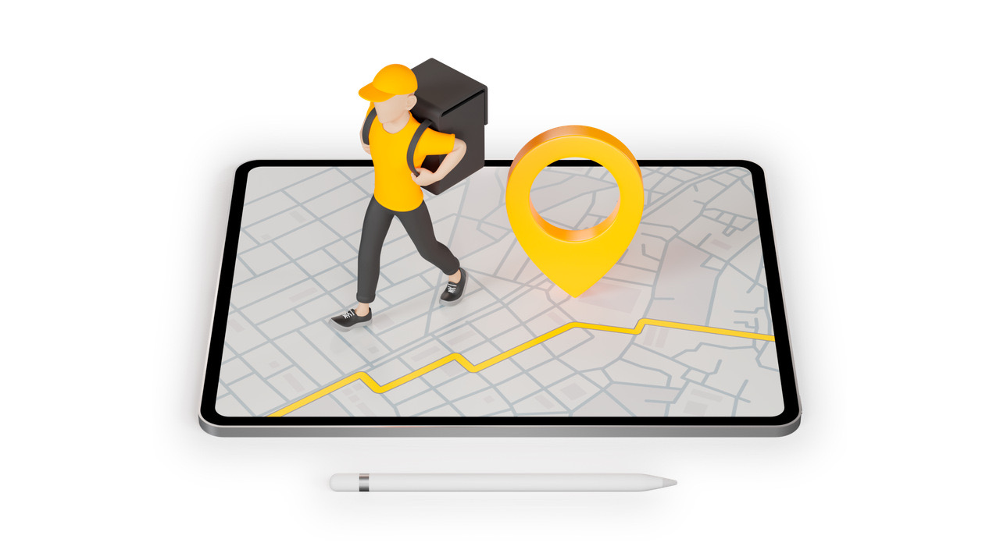
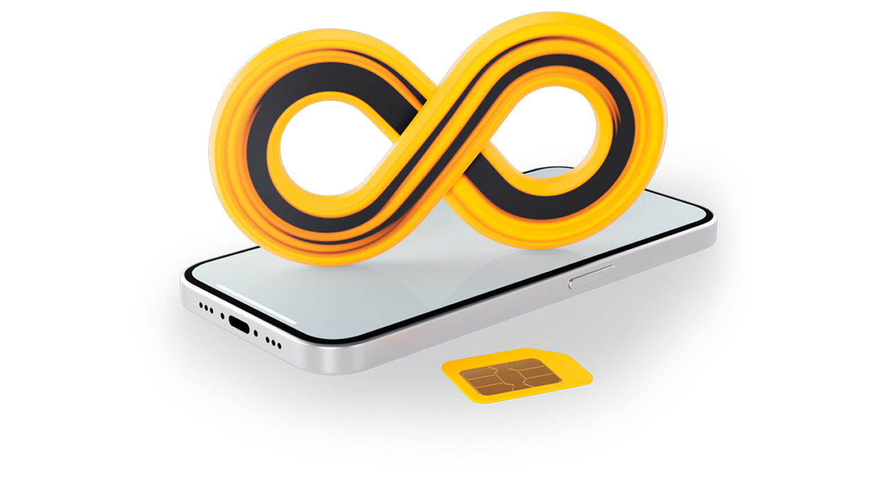
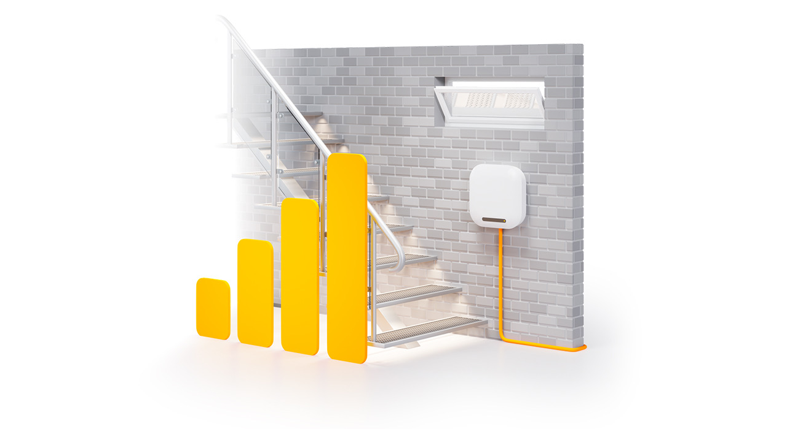
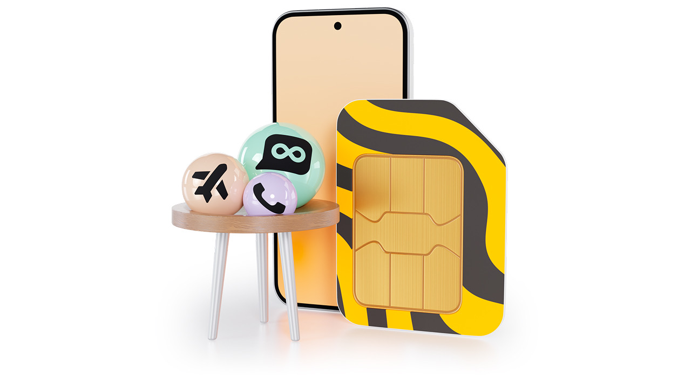
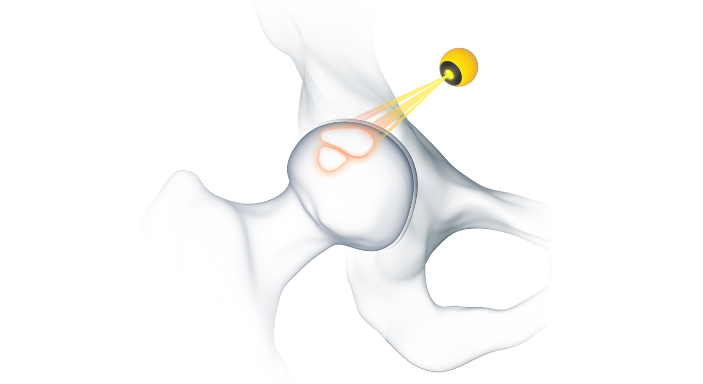

Письма
Компоненты email-рассылок билайн бизнес: шапка с новым логотипом, контентные блоки, кнопки и подвал в светлой и темной версии. Размеры 1:1 к макетам email 2.0 в Figma, примеры писем собраны только из этих компонентов
Письмо в одном экране
Любое письмо собирается из шести частей сверху вниз. Каждая часть живет на своей карточке, карточки стоят на сером фоне через 12 px
Поля по 40 слева и справа. На мобильном колонка 320 и поля 20
Без теней и обводок. Градиенты только внутри картинок
Все остальное Arial: так текст одинаково выглядит в Outlook, Gmail и почте Mail.ru
Один основной CTA на экран, подпись Arial 18/20 черным
- 1ШапкаЛоготип 222×34 в верхней части первой карточки, поле 72
- 2ИмиджКартинка 640×350 сразу под логотипом, без рамки
- 3Первый экранH1, лид и при необходимости жирный лид или плашка
- 4Контентные блокиОдин смысловой блок на карточку: текст, шаги, модули, плитки
- 5CTAКнопка в последнем блоке или отдельной карточкой
- 6ПодвалСоцсети, слоган, дисклеймер и юридический текст с отпиской
Сетка и отступы
Вертикальный ритм фиксирован: одинаковые поля внутри блоков и одинаковые расстояния между ними. Так письмо собирается из любых блоков и не разваливается
| Отступ | Где | Мобильный |
|---|---|---|
| 40 | поля рамки 720 слева и справа | 20 |
| 32 | поля контентного блока, между разделами внутри карточки | 24 / 20 |
| 24 | верхнее поле первого экрана под имиджем | 24 |
| 20 | шаг между элементами блока, отступ от карточки до краев письма сверху | 20 |
| 16 | между абзацами в стеке, между кнопками, шаг в оффере | 16 |
| 12 | между карточками, между плитками | 12 |
| 10 | между пунктами списка, между иконками соцсетей | 10 |
| 8 | между плашками шагов и УТП | 8 |
На мобильном все колонки складываются в одну: модуль с иллюстрацией, плитки, колонки фактов и тарифы. Проверяйте оба размера переключателем 720 / 360 над каждой витриной
Цвет
Письмо почти монохромное. Желтый работает как сигнал: кнопка, линии, рамки, маркеры, последний шаг. Пастельный желтый только для кружков и маленьких значков: большие желтые заливки портит темная тема почты
Светлое письмо
#EFEFEFРамка 720 вокруг карточек#FFFFFFВсе контентные блоки#F5F5F5Шаги, УТП, иллюстрации, детали#FFC800Кнопка, линии 48×2, рамки, маркеры#FFF4CEКружки шагов, плашка над H1#EBEBEBВторая кнопка, кнопки оценки#141414Абзацы, списки, подписи#282828H1, H2, соцсети и слоган#787878Пояснения, сноски, подвал#DDDDDDПервая полоса подвала#C3C3C3Вторая полоса подвала#5E9FCAb2b.beeline.ru и отпискаТемное письмо
#282828Рамка вокруг карточек#000000Контентные блоки#1A1A1AШаги, УТП, иллюстрации#FFFFFFВсе уровни текста#A6A6A6Пояснения и сноски#2D2D2DПервая полоса подвала#222222Вторая полоса подвала#FFC800Не меняется, на темном можно и текстомЖелтый на кнопке, в линиях, рамках, маркерах и в последнем шаге
Акцентный текст желтым только на черной карточке
Желтый текст на белом: контраст 1,6 из 4,5 нужных
Градиент или картинка фоном письма, цветные карточки
Плашка, залитая желтым: в темной теме почты она станет бурой
Шрифт
Beeline Sans стоит только в главном заголовке. Почтовые клиенты часто не загружают веб-шрифты, поэтому H1 должен хорошо выглядеть и в Arial. Весь остальной текст сразу набираем Arial
| Уровень | Шрифт и размер | Цвет | Пример |
|---|---|---|---|
| H1 | Beeline Sans Regular 26/30 | #282828 | Управляйте задачами |
| H2 | Arial Bold 20/26 | #282828 | Модуль «Координатор» |
| Жирный лид | Arial Bold 20/26 | #141414 | Контролируйте выполнение задач |
| Заголовок блока | Arial Regular 24/28 | #282828 | Когда это удобно? |
| Цена | Arial Bold 28/32 | #282828 | 1 290 ₽ |
| Подзаголовок | Arial Bold 16/21 | #282828 | Автоматизация управления |
| Текст | Arial Regular 16/21 | #141414 | Помогает улучшить качество выездного обслуживания |
| Кнопка | Arial Regular 18/20 | #000000 | Оставить заявку |
| Сноска | Arial Regular 13/16 | #787878 | Скидка действует первые три месяца |
| Подвал | Arial Regular 11/13 | #787878 | Рассылка носит информационный характер |
Открытый вопрос: в письмах в работе подпись кнопки Arial Regular 18/20 черным, а в описании компонента email 2.0/button указан Bold #141414. Пока в гайде Regular, как в отправленных письмах
Логотип и шапка
Шапка задает контекст отправителя. В письмах используем только обновленный логотип: «билайн» и «бизнес» в контурной капсуле
Имидж
Иллюстрация поддерживает смысл письма и показывает продукт. Используем бытовые 3D-иллюстрации: телефон, роутер, облако, подарок. Ставится сразу под логотипом в первой карточке на всю ширину 640. Вариантов имиджа два: с иллюстрацией и без нее, тогда текст начинается сразу под логотипом

hero-monitoring.jpghero-gifts.jpg
hero-unlimited.jpg
hero-femto.jpg
hero-abonement.jpg
hero-medicine.jpgРазмер
- 640×350 в макете, 1280×700 в верстку
- иконки ×4
- одинаково на десктопе и мобильном, без отдельной версии
Картинка
- иллюстрации в PNG с прозрачным фоном
- без рамок и подписей внутри
- безопасные отступы со всех сторон, объект не режется краем
Нельзя
- заголовок, текст и цены на иллюстрации: Outlook и часть почт по умолчанию не загружают картинки, и текст пропадет вместе с ней
- градиент как фон письма, только внутри картинки
- картинка без alt: при отключенных картинках письмо теряет смысл
Первый экран
Первый экран это одна карточка целиком: логотип, иллюстрация и заголовок. Вариантов два: с иллюстрацией и без нее, у каждого есть версия с датой. Здесь читатель решает, читать ли дальше, поэтому одна мысль и все по центру
Текстовые блоки
Раскрывают смысл, преимущества и логику продукта. Один смысловой блок, одна карточка
Шаги
Когда клиенту нужно что-то сделать по порядку: подключить, настроить, зарегистрироваться
Преимущества
Короткие тезисы о пользе. Форма зависит от числа тезисов и длины текста: галочки для трех развернутых, линии для коротких
Рамки и сноски
Рамка выделяет одну вещь, которую нельзя пропустить: путь по шагам, дату работ, промокод
Модуль с иллюстрацией
Компонент block·module из email 2.0: текст и иллюстрация на плашке в одном ряду. Модули в письме чередуем: справа, потом слева
Плитки и иконки
Плитки для разделов и возможностей, по которым клиент пойдет дальше. Сетка иконок для коротких выгод
Оффер и цена
Компоненты price и block·offer. Цена всегда с периодом и условием, без мелкого текста в другом конце письма
Кнопки и CTA
CTA функциональный элемент, не декоративный. Предсказуемое место, одна основная кнопка на экран и цвета только из утвержденной палитры
Новые блоки
Блоки, которых пока нет в Figma, но которые просятся в письма: прогресс по шагам для цепочек онбординга и цитата клиента. Собраны из тех же размеров и цветов, верстаются таблицами
Темное письмо
Часть клиентов читает почту в темной теме. Темное письмо собирается из тех же блоков, меняются только цвета поверхностей, логотип и картинки подвала
Темная тема почты
Если у светлого письма нет темной версии, Gmail в телефоне и Outlook перекрашивают его сами: инвертируют цвета, а картинки оставляют как есть. Белая карточка становится черной, черный текст белым, а желтая заливка бурой, цвета детской неожиданности. Рамка без заливки переживает инверсию, плашка нет. Блоки с заливкой в каталоге помечены «Темная тема»
Логотип с обводкой на черном, белые соцсети и слоган
PNG с прозрачным фоном: нет ли светлого ореола по краю
Желтый не меняется ни в одной теме
Имиджи и плашки на белом фоне: для темного письма нужна вторая версия картинки, в примерах ее пока нет
Черный текст в картинке пропадает на темном фоне
Белая подложка в PNG дает белый прямоугольник
Текст подвала темнее #787878 на полосе #222222 уже не читается
Примеры писем
Шесть типовых писем, собранных только из компонентов этой страницы. Переключайте тему и ширину, чтобы увидеть письмо так, как его увидит клиент
Тексты и цифры в примерах условные: они показывают сетку и ритм, а не реальные предложения. Первое письмо повторяет макет «Единый мониторинг» из Figma
Текст письма
Письмо читают по диагонали: заголовок, жирные начала, кнопка. Каждая из этих точек должна работать без остального текста
Тема и прехедер
- тема короткая и конкретная, видна целиком в мобильной почте
- прехедер продолжает тему, а не повторяет ее
- без капса и восклицательных знаков подряд
Заголовок и лид
- H1 называет пользу, а не продукт
- лид объясняет, как это работает
- цифры с периодом и базой
Списки и кнопки
- пункты с маленькой буквы, без точки в конце
- кнопка начинается с глагола
- «билайн» всегда строчными
Управляйте задачами, а не только маршрутами
Кнопка «Оставить заявку»
польза и понятное действиеНовая услуга Единый мониторинг!
Кнопка «Нажмите здесь»
название вместо пользы, кнопка без действияПро букву «ё»: в правилах писем в Figma «ё» сохраняется, а в текстах дизайн-системы мы ее не пишем. В примерах на этой странице «ё» нет, правило для писем нужно подтвердить
Верстка и проверка
В верстке письмо собирается таблицами с инлайн-стилями. Classic Outlook на движке Word Microsoft поддерживает минимум до 2029 года, а Яндекс Почта оставляет только инлайн-стили, поэтому таблицы остаются основой. Что изменилось в почтовых клиентах в 2026, на вкладке «Рынок»
| Метка | Куда ставим |
|---|---|
{clickrate:URL} | основная ссылка: кнопка, имидж, ссылка в тексте, ведущая к цели письма |
{minorclick:URL} | второстепенные ссылки: соцсети, сайт в подвале, вторичная кнопка |
{unsubscribe} | ссылка «отказаться» в юридическом тексте подвала |
{messageopened} | отметка об открытии письма в конце верстки |
Кнопку для Outlook дублируем через VML v:roundrect 240×50 с arcsize="24%": так скругление 12 сохраняется и в Outlook для Windows
Чек-лист перед отправкой
Частые ошибки
Кнопка вплотную к картинке
Два разных радиуса в одном письме
Две желтые кнопки рядом
Текст и цена внутри картинки
Старый логотип с желтой плашкой
Желтый текст на белом фоне
Файлы и ссылки
sgoryanskya.github.io/email_goryanskaya
Система сборки email ↗Figma, страница «05_компоненты»: правила и компонентыFigma JPKplRlMBQ6fDhgNZ6IS4i
Макеты писем ↗Figma «PRO - Email - Goryanskaya», компоненты email 2.0Figma eGVZlKKy3YJPi0s8XqEQKZ
Конструктор макетов ↗Figma: система сборки писем, ссылка с главной дизайн-системыFigma A5zRZdzDZmI9d13j2GOpce
Компоненты169 блоков в 16 типах: email 2.0, конструктор, реальные письма, приемы рынка и новые варианты для тестаemail/catalog.html
РынокРазбор писем конкурентов и лидеров B2B, 14 приемов, почтовые клиенты 2026, маркировка рекламыemail/market.html
Макеты писем20 писем целиком из компонентов каталога: пять повторяют реальные письма из Figma, шесть собраны по приемам рынкаemail/layouts.html
Стили компонентовВсе размеры и цвета блоков в CSS-переменныхemail/assets/email.css
Компоненты и примерыРазметка блоков, варианты и шесть писемemail/assets/blocks.js
ТокеныЦвета, шрифт и отступы писем в разделе emailtokens/tokens.json
Логотипlogo-light.svg и logo-dark.svg, 222×34
email/assets/img
3D-иллюстрацииЗнаки для плиток и иконок в общей библиотекеbuzz/assets/illustrations.js